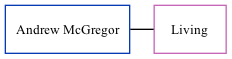

Andrew J McGregor
[ Home ] | [ Calendar ] | [ Surnames Index ] | [ Family History ]Andrew Mcgregor, the husband of Lisa Elaine Hobbs (the second cousin twice-removed on the mother's side of Nigel Horne), and married Lisa in Chichester, Sussex, England around Aug 20041.
Citations
- England & Wales Marriages 1837-2005 - Findmypast
Media
England & Wales marriages 1837-2008 - BMD/M/2004/9/94990422
England & Wales marriages 1837-2008 - BMD/M/2004/9/95079421
Family Tree
Generated by ged2site. Last updated on Nov 13, 2024